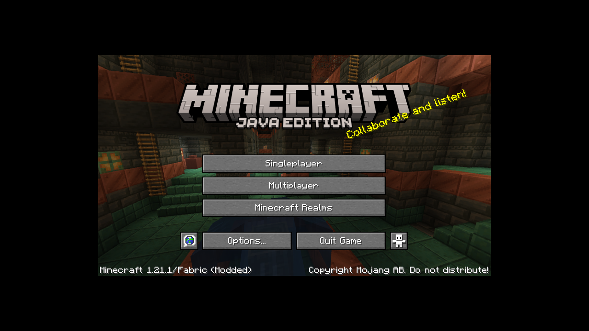
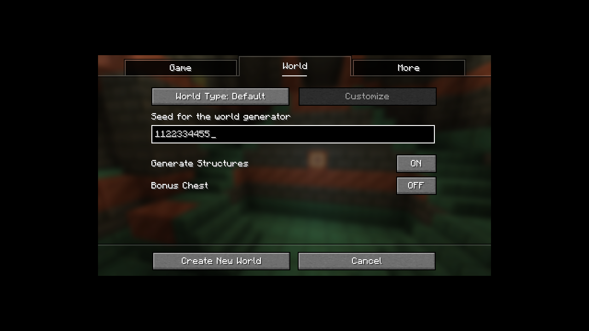

Linux and macOS
Requires Node.js 24.9 or newer with the bundled npm/npx.
Minecraft mods.
Proven, not promised.
A shared engineering core for OMP, DeepSeek Harness, and MCP. Exact targets. Editable assets. Evidence at every step.

Evidence over claims
Voxellume records what ran, what failed, and what remains unavailable. A missing check never becomes a pass.

One core, three surfaces
Move through the same pipeline used by every host.
01 / 05
Describe the gameplay, assets, compatibility, and acceptance criteria in natural language.
Input: a versioned natural-language request
One command
The installer uses an immutable source archive, verifies its hash, builds the package, and installs the MCP command.
Requires Node.js 24.9 or newer with the bundled npm/npx.
Run in PowerShell 5.1 or newer with Node.js 24.9 or newer.
omp plugin link "$PWD" --scope project
omp plugin list --jsondsh plugin --profile voxellume-test add ./voxellume-0.1.0.tgz \
--ignore-scripts --config.auto-install-peers=false
dsh --profile voxellume-test --dump-config{
"mcpServers": {
"voxellume": { "command": "voxellume-mcp" }
}
}Current boundary
All 68 cells have explicit outcomes, but none has completed the full build, server, GameTest, production-JAR, real-client, and visual matrix. New-project scaffolding stays blocked until that changes.